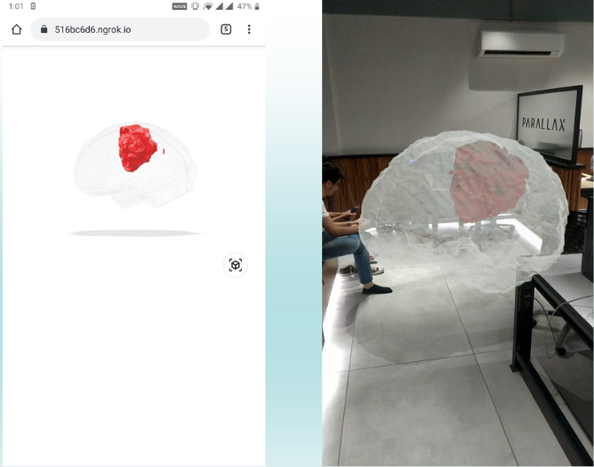

Immersive Visualization in Medical Imaging
We observed that most medical documents like DICOM, CT Scans and MRI constitute of esoteric jargon which can only be elaborated upon by doctors. Dedicated to tackle this problem, we deliberated upon the potential of Augmented Reality to escape the currently elusive linguistic explanation provided by doctors, and move to a much more graphically interactive solution which the patients can easily understand.
Pipeline of the process:
- Tumor SegmentationThe segmentation of brain tumours has been carried out using a CNN which is based on the UNet architecture. A segmented tumour is generated by the network, which is then used for volumetric rendering
- 3D Volume GenerationThe 3D volume is generated using the Volume ToolKit (VTK) library. Two STL files are generated- one for the brain and the other for the segmented tumour. The volume rendered is unique to the shape and size of each patient's brain.
- Superimposing Tumor and BrainThe two voulmes generated need to be combined accurately to display the correct size and orientation of tumor relative to brain. We combined these voulmes by superimposing their origins.
- Projecting to ARWe use Modelviewer to display the generated 3D model. A unique sharebale link is generated for every report. The AR icon allows one to view the model in physical space for effective viewing experience.
Incorporated the pipeline in a web application for the doctors that includes a dashboard and unique shareable link for every patient’s report.
Technologies used: HTML, Flask, Blender, Python with libraries VTK, SimpleITK, bpy, Tensorflow and Keras.
This is a report that we have generated.
Feel free to interact with it. You can zoom in/out, rotate and also change the viewport styles using the toggles present to the left of the models.
